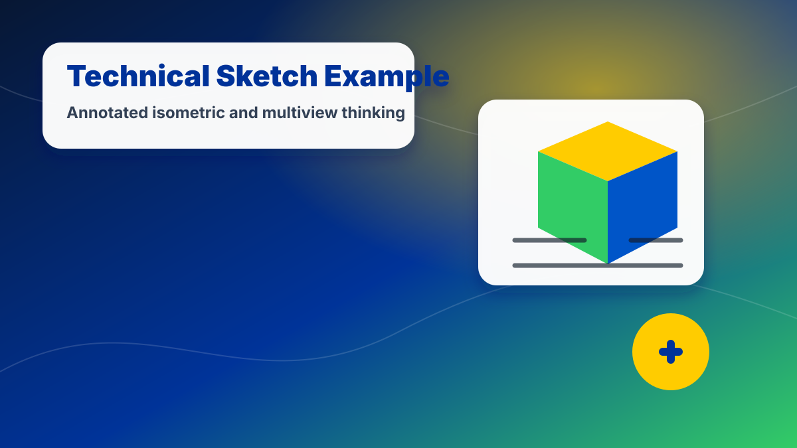
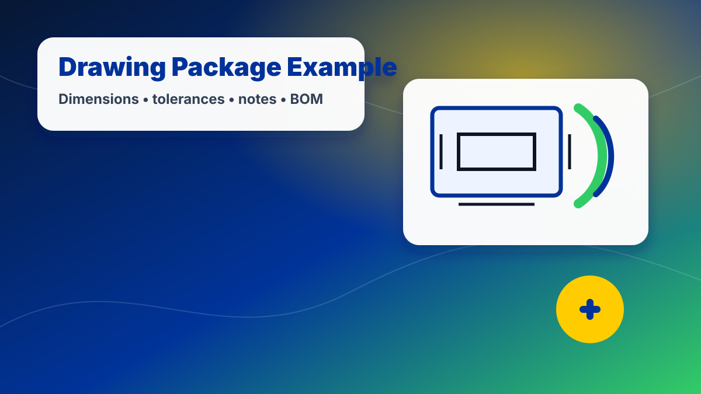

Unit 2:
Technical Sketching for Aerospace Design
Sketch and communicate aerospace components before CAD modeling or fabrication.

Unit 2
Sketch and communicate aerospace components before CAD modeling or fabrication.
Media & Examples
Use these visuals and short videos to connect this unit to real engineering work.
Real Aerospace Connection
Use sketches, views, annotations, and dimensions to communicate shape and intent.
As you work through this unit, focus on how the skill supports safer, clearer, and more testable aerospace design decisions.
Technical Sketching for Aerospace Design
This visual can be used as a quick reference when reviewing the unit goal, project expectations, and design context.
NASA Now: Engineering Design — Wind Tunnel Testing
See how models and testing support design decisions before full-scale aerospace systems are built.
Isometric sketch
Show 3D form quickly and clearly.

Multiview thinking
Communicate the front, top, and side views of a component.

Drawing package preview
Use dimensions and notes so a part can be made.
Unit Resources
Download Unit 2 Materials
Sketching packet, drawing package rubric, and sketching/dimensioning checkpoints.
Student Packet
Use this packet for daily work, planning templates, sketches, reflections, and portfolio evidence.
PDFProject Rubric
Review how the major unit deliverables will be graded before submitting your final work.
PDFCheckpoint Quizzes
Review the unit’s key vocabulary, concepts, and skill checkpoints.
Student note: Download or open the packet at the start of the unit. Your teacher will tell you which pages are submitted digitally and which are completed in your engineering notebook.
Start Unit 2 Here
Unit 2 builds the visual communication skills engineers use before and during CAD modeling. You will sketch aerospace components, create isometric and multiview drawings, use line conventions, apply basic dimensioning, and assemble a drawing package that communicates a design clearly.
Start Here
Unit overview, learning targets, deliverables, pacing, and what you will submit.
SketchingConcept Sketching
Turn aerospace ideas into fast visual concepts with labels, notes, and design intent.
3D ViewIsometric Sketching
Create 3D-looking sketches of aerospace parts using isometric axes and proportions.
ViewsMultiview Drawings
Communicate front, top, and right-side views for manufacturing and inspection.
StandardsLine Conventions
Use object, hidden, center, construction, dimension, and extension lines correctly.
PrecisionDimensioning Basics
Place dimensions clearly so a part can be measured, modeled, or manufactured.
CommunicationAnnotated Drawings
Explain design intent, function, material ideas, and questions directly on sketches.
PortfolioAerospace Drawing Package
Create a final sketching package for an aerospace component.
Unit 2 Essential Question
How do engineers use sketches and drawings to communicate designs before they are built?
Unit 2 Drawing Package
- Concept sketches with annotations
- One clean isometric sketch
- One multiview drawing
- Correct line conventions
- Basic dimensions
- Design notes and reflection
20-Day Unit 2 Pacing
Each lesson is designed for a 45-minute class period.
| Day | Focus | Student Output |
|---|---|---|
| 2.1 | Why engineers sketch | Aerospace sketch warm-up |
| 2.2 | Sketching as communication | Labeled object sketch |
| 2.3 | Concept sketching | Three quick aerospace concepts |
| 2.4 | Annotations and design intent | Improved annotated concept |
| 2.5 | Proportion and visual clarity | Sketch revision checkpoint |
| 2.6 | Isometric sketching basics | Isometric practice shapes |
| 2.7 | Isometric aerospace components | Wing rib or bracket sketch |
| 2.8 | Curves, holes, and features | Feature practice sketch |
| 2.9 | Isometric sketch checkpoint | Clean isometric sketch |
| 2.10 | What are multiview drawings? | View matching activity |
| 2.11 | Front, top, and right views | Basic multiview drawing |
| 2.12 | Projection and alignment | Aligned multiview practice |
| 2.13 | Line conventions | Line type identification |
| 2.14 | Hidden and center lines | Feature drawing practice |
| 2.15 | Dimensioning basics | Dimensioned practice part |
| 2.16 | Dimensioning for manufacturing | Aerospace part dimensions |
| 2.17 | Drawing package planning | Select final component |
| 2.18 | Drawing package work day | Draft package |
| 2.19 | Peer review and revision | Revised drawing package |
| 2.20 | Submission and reflection | Final package and reflection |
Unit Project
Aerospace Component Drawing Package: Choose or receive an aerospace-related component such as a wing rib, payload bracket, sensor mount, fuselage panel, or control surface support. Create a sketching package that shows the part through concept sketches, an isometric sketch, a multiview drawing, annotations, and basic dimensions.